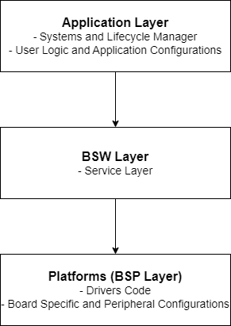

Welcome to Eclipse OpenBSW
This project provides a SDK to build professional, high quality embedded software products. This is a software stack specifically designed and developed for automotive purpose.
This repository describes the complete environment required for building and testing the target, including support for both POSIX and the S32K148EVB platform. It provides the service layer, driver code and configuration files, along with detailed user documentation.
If you are new to this, take a look at Lessons for beginners.
Structure of the Stack
{kind=link}
Eclipse OpenBSW includes a demo application that showcases the use of ADC, PWM, GPIO, UDS and CAN communication.
The stack is implemented in C++ to leverage flexibility and optimization. It has been designed with efficiency in mind, offering freedom for customized implementation to address project-specific use cases.
Runtime Behavior Overview
The main.cpp contains systems that are added to the lifecycleManager with a specific runlevel.
Check CanSystem and DemoSystem for reference.
app_main() is the entry point for the generic application code.
POSIX:
The
executables/referenceApp/platforms/posix/main/src/main.cppis the entry point for POSIX platform.
S32K148EVB:
The
executables/referenceApp/platforms/s32k1xx/main/src/main.cppis the entry point for S32K148EVB platform.StaticBspis a class which contains platform specific BSP modules like ADC, PWM and CAN.BspSystemclass is used to handle bsp modules and its cyclic functions withlifecycleManager.
Unit tests
Note that the folder executables/unitTest is the entry point for all unit tests.
It contains also some modules to satisfy platform specific dependencies for the unit tests.
CMake
This is how to build and run the unit tests from the root of the workspace:
cmake -B cmake-build-unit-tests -S executables/unitTest -DBUILD_UNIT_TESTS=ON
cmake --build cmake-build-unit-tests -j
ctest --test-dir cmake-build-unit-tests -j
# if you modified some CMakeLists.txt files in the project don't forget to run:
cmake-format -i $(find . -name CMakeLists.txt | sed '/3rdparty\/.*\/CMakeLists\.txt/d')
Explore the code
You can now explore the code, make your own changes and learn how it works.
Refer to application page for detailed information about demo application and start making your own changes in DemoSystem.
Refer to posix main and S32k148 main pages for information about BSP system handling.
Refer to bspConfiguration - S32k148EVB page for Driver configuration and pin mapping.
Also refer to the beginners guide pages below: